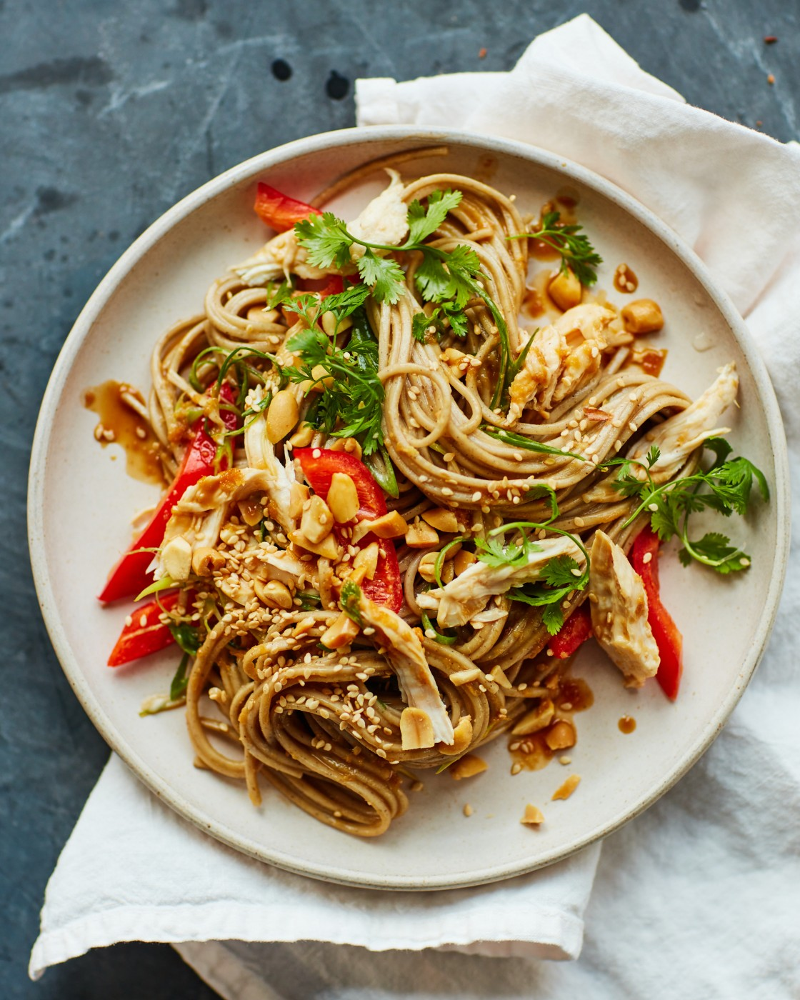

Chicken Noodle Salad

Lasagna
Get ready to make all sorts of friends when you bring a big bowl of this Asian chicken noodle salad to the next big cookout.
The only folks you might scare away are the ones who brought regular pasta salads.
There's just something delightfully addictive about this special combination of cold and spicy.
This recipe is the perfect catchall for all those summer vegetables we're supposed to be eating more of, as well as any dry leftover
chicken you have around.
You'll find a detailed ingredient list and step-by-step instructions in the recipe below, but let's go over the basics:
Ingredients
- 3 cloves garlic, crushed
- ½ cup seasoned rice vinegar
- 1 tablespoon soy sauce
- 1 tablespoon fish sauce
- 1 tablespoon brown sugar
- 1 tablespoon Sriracha chile sauce
-
1 tablespoon hoisin sauce
-
1 teaspoon sesame oil
-
1 cooked chicken breast
-
1 (8 ounce) package spaghetti
-
1 cup grated carrots
- ⅓ cup chopped cilantro
Steps
- Whisk garlic, rice vinegar, soy sauce, fish sauce, brown sugar, Sriracha, hoisin, and sesame oil together
in a mixing bowl for the dressing.
-
Tear chicken apart into strands similar in width to the spaghetti. Refrigerate until ready to use.
-
Bring a large pot of lightly salted water to a boil.
Cook spaghetti in the boiling water, stirring occasionally,
until tender yet firm to the bite, about 12 minutes. Drain and rinse with cold water.
- Transfer spaghetti to a mixing bowl; add the chicken, carrots, bell pepper, and green onions. Pour in the dressing and
toss by hand until well combined.
Seal the surface of the salad with plastic wrap and refrigerate, tossing occasionally, for 2 to 12 hours, the longer the better.
- Add peanuts, basil, mint, and cilantro to the salad. Toss well; taste and adjust for seasoning.